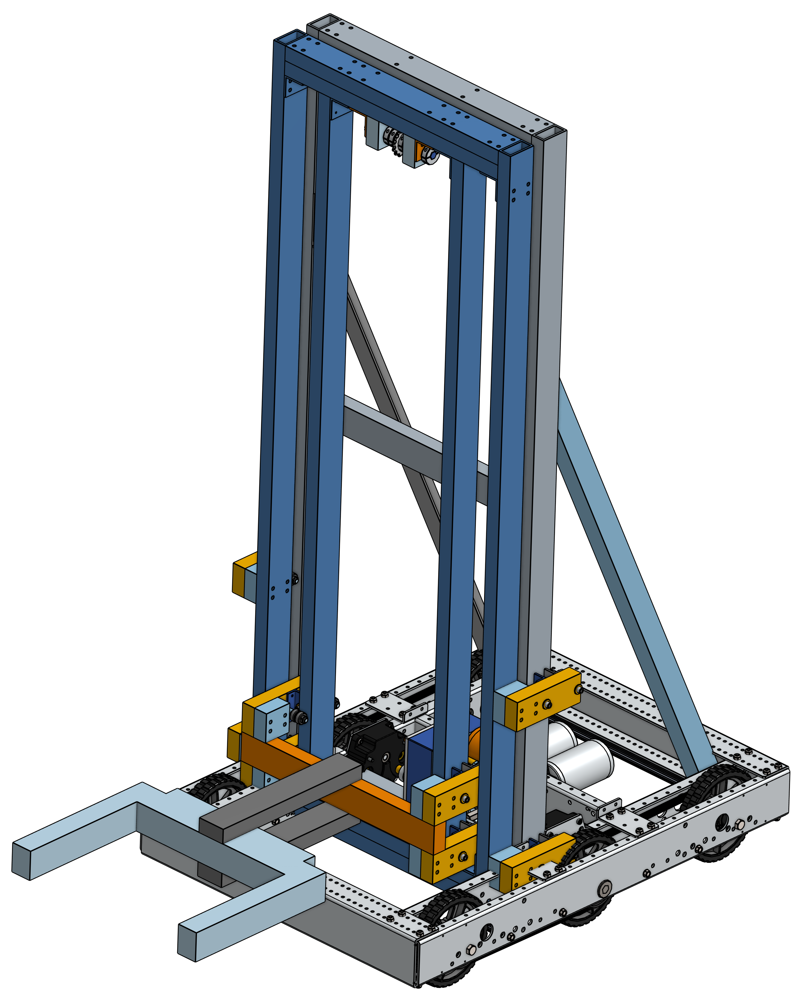
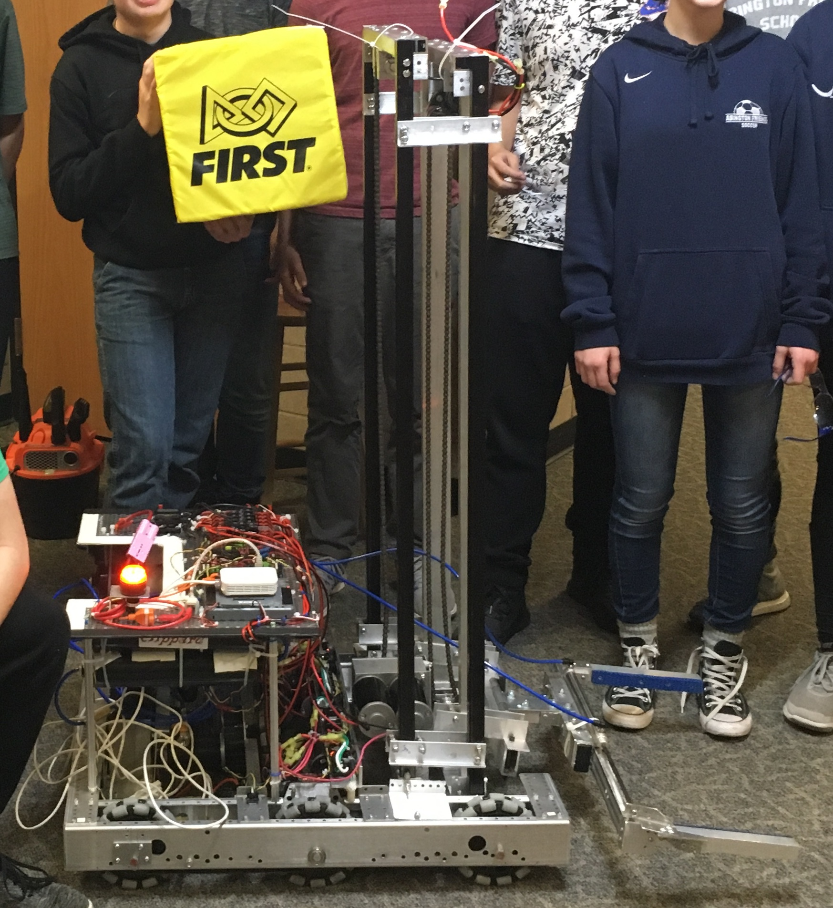

I came in towards the end of the 2017-18 season after the robot had been built and was only able to help with troubleshooting and solving some mechanical issues.

The Onshape model had some detail but was more of a block diagram.

The robot as built didn't exactly follow the CAD design.
The chassis of the robot was a prefabricated drive base kit which also accounts for the accuracy of that portion of the CAD model. The grasping unit and elevator susbsystems were built from 1" x 2" aluminum extrusion, all cut and drilled and assembled by hand. The robot was constructed sequentially, meaning that everything was built directly onto the robot. This caused the entire robot to be unavailable for development, testing, or practice while parts of it were being fabricated, a bottleneck that prevented meaningful delegation of tasks and led to the team running out of time. The software and hardware teams were in contention for access, and also plagued each other with changing specifications. This left little time for testing and troubleshooting, let alone drive practice. In fact our alliance partners were helping us debug our autonomous routines during competition.
Some painful videos of this robot's performance can be seen here.
Design points:
• Intake 'deployed' by shaking it loose from a hook